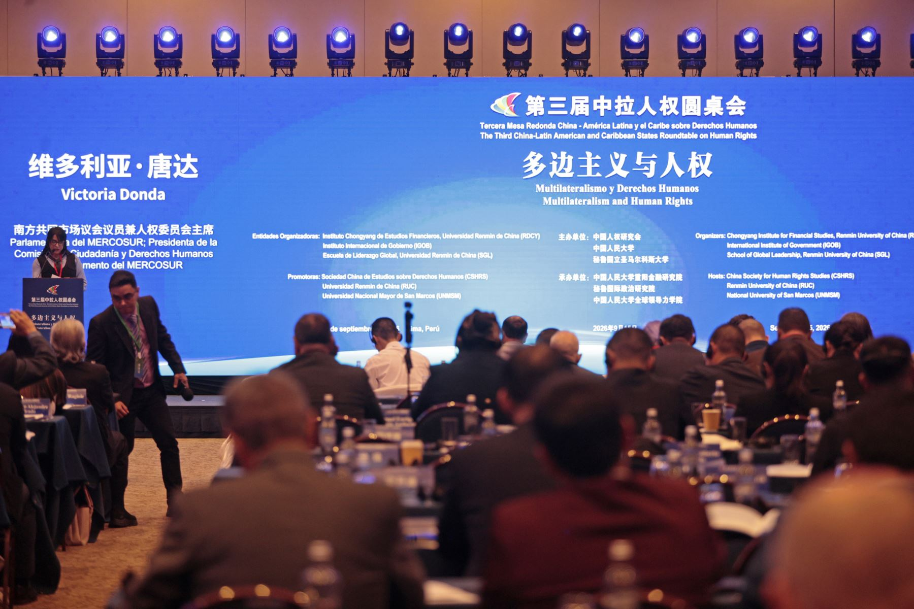

La ciudad de Lima se convirtió en el epicentro del debate internacional sobre derechos fundamentales al albergar la Tercera Mesa Redonda China–América Latina y el Caribe sobre Derechos Humanos. Este importante cónclave reunió a altas autoridades, expertos, académicos y representantes diplomáticos provenientes de la República Popular China y de diversas naciones de la región latinoamericana y caribeña.
El evento institucional se consolida como un mecanismo clave de entendimiento mutuo y cooperación bilateral y birregional. A través de mesas de trabajo y ponencias magistrales, los asistentes analizaron los avances logrados en el ámbito legislativo, social y económico, así como los retos pendientes para garantizar el pleno ejercicio de los derechos humanos en contextos de desarrollo global cambiante.
Un espacio consolidado de diálogo birregional
Desde su concepción, este formato de mesa redonda ha buscado estrechar los lazos de comunicación entre China y los países de América Latina y el Caribe, promoviendo el intercambio de experiencias y buenas prácticas en materia de gobernanza, inclusión social, erradicación de la pobreza y protección de los derechos de grupos vulnerables.
Durante las jornadas de discusión en Lima, los delegados destacaron la importancia del respeto a la soberanía, la no injerencia en los asuntos internos y el multilateralismo como bases fundamentales para construir un sistema internacional de derechos humanos más equitativo y representativo.
Perspectivas y cooperación futura
Los organizadores y participantes de la Tercera Mesa Redonda coincidieron en señalar que este tipo de encuentros no solo fortalecen el entendimiento diplomático, sino que también abren canales concretos para la cooperación técnica y académica. Se enfatizó en la necesidad de continuar institucionalizando este espacio de diálogo periódico para asegurar un seguimiento efectivo a los acuerdos y recomendaciones surgidos en las diferentes ediciones del foro.
Con la clausura de esta tercera edición en Lima, la agenda de derechos humanos entre China, América Latina y el Caribe da un nuevo paso hacia adelante, reafirmando el compromiso de los estados participantes con la mejora continua de las condiciones de vida y el bienestar de sus poblaciones.